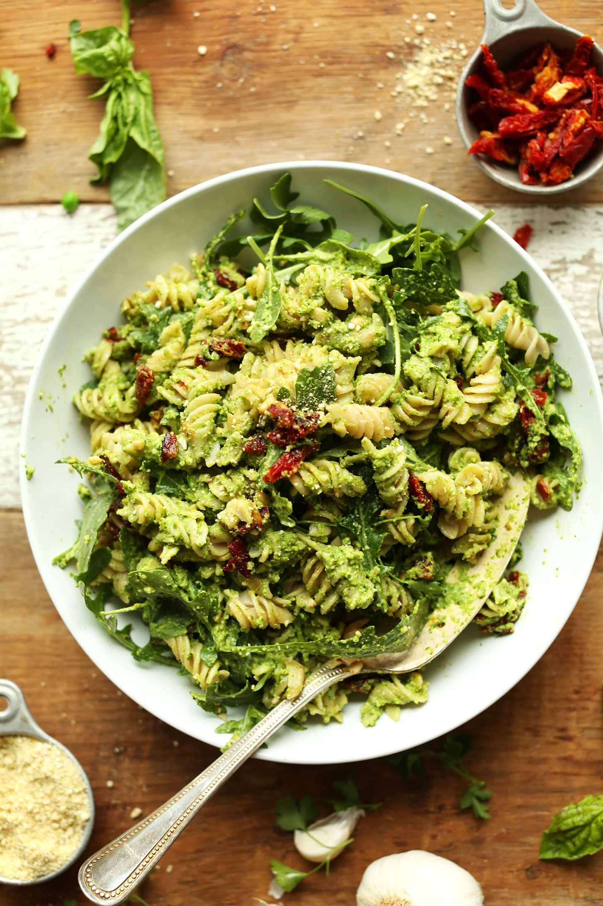
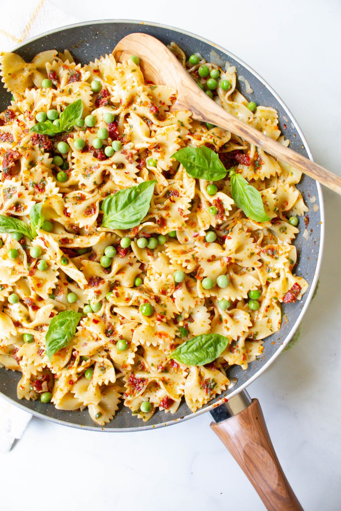

Here is a simple pasta recipe that is quick, tasty, and can be easily modified. It is one of my favourite recipes as it is super easy to make, allows you to add any other ingredients you want, and tastes delicious.


Ingredients
2-3 cups pasta (any type will work)
1 ½ cups peas (frozen or fresh)
1 cup sun-dried tomatoes
2-3 tbsp pesto
½ cup grated parmesan cheese
1-2 tbsp olive oil
salt to taste
Instructions
Get a pot of water to a rolling boil (212°F or 100°C) and add the pasta with a bit of salt. Follow the instructions on the package to cook the pasta.
Heat up a seperate pan to medium-high heat. Add 1-2 tbsp olive oil, or just enough to coat the surface of the pan. Once the oil heats up a little, add the 1 ½ cups of peas. Sauté the peas for 1-2 minutes. (Add any other vegetables at this step if you would like to.)
Add the sun-dried tomatoes to the pan. Toss the peas with the tomatoes for a minute or so. Bring the heat down to medium.
Once your pasta is cooked, add the pasta to the pan. Toss the pasta with the peas and tomatoes with a little bit of salt and pasta water. Turn off the heat and add in the pesto to the pasta. Mix well and sprinkle the grated parmesan cheese on top. Serve while still hot.
(OPTIONAL: Add a sprinkle of pepper and chilli flakes on top for a hint of spice.)